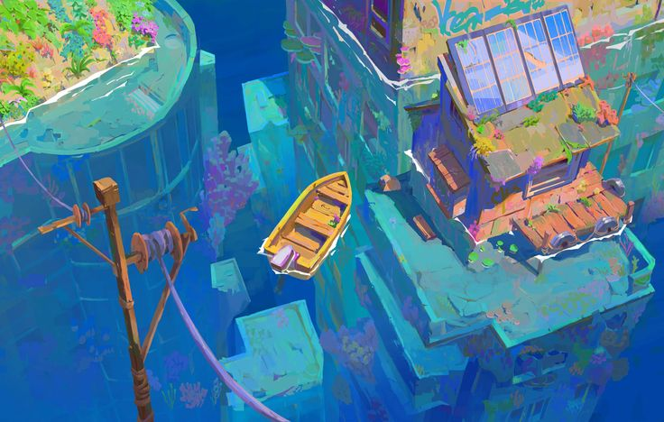

潜水
在所在水域按潜水直接下潜
深度 0.0 m
↑
上浮
←
下潜
→
↓
WASD 游动 · E 上浮 · Q 下潜
点击宝箱自动游近搜索 · 方向键取消自动游动
正在搜索
搜索
拖动旋转 · 右键平移 · 滚轮缩放
sea
一片小小水域，一段慢慢的生活
🎨 原画构图视角
🚤 快艇特写视角
🕊️ 全景环绕视角
⚓ 航行：原位摇曳
🖼️ 原画对比
左键拖拽
旋转视角
右键拖拽
平移画布
滚轮
缩放景深
悬停模型后点击卡片操作
原画参考 (Original Concept)
✕
